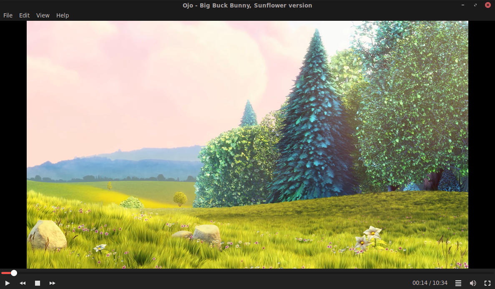
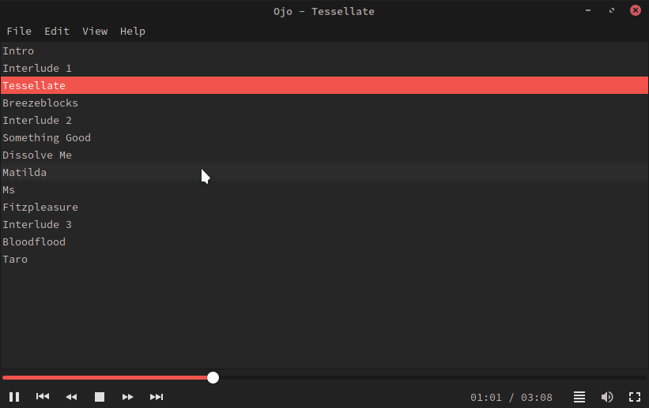
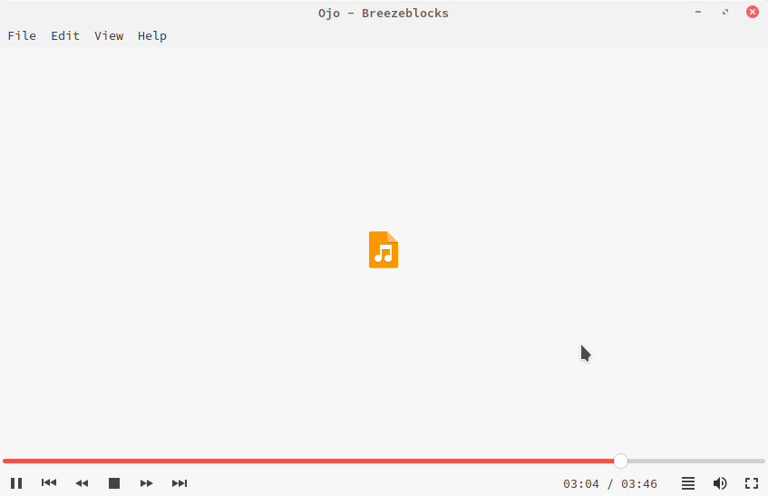
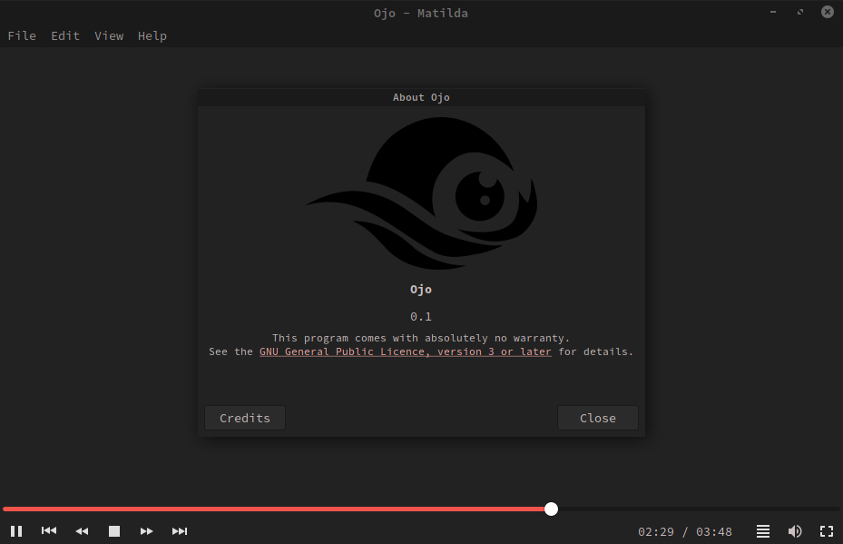

is an open source media player for linux
Ojo's aim is to build a clean and functional media player for linux. Ojo comes the libvlc media framework that is integrated into a clean user interface build upon Gtk. Although it is working on any desktop environment it is optimised to look brilliant on gtk-based desktops, especially the traditional MATE Desktop.
Ojo is currently in an early development phase. This is not yet entirely stable or fully functional, albeit it is already quite usable.
The source code is hosted on github https://github.com/FreaxMATE/Ojo



